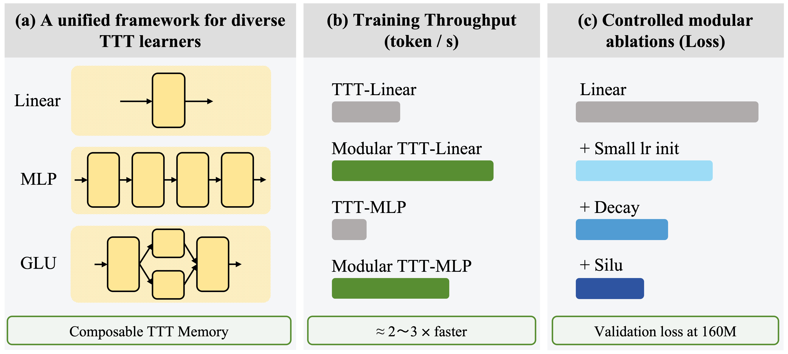
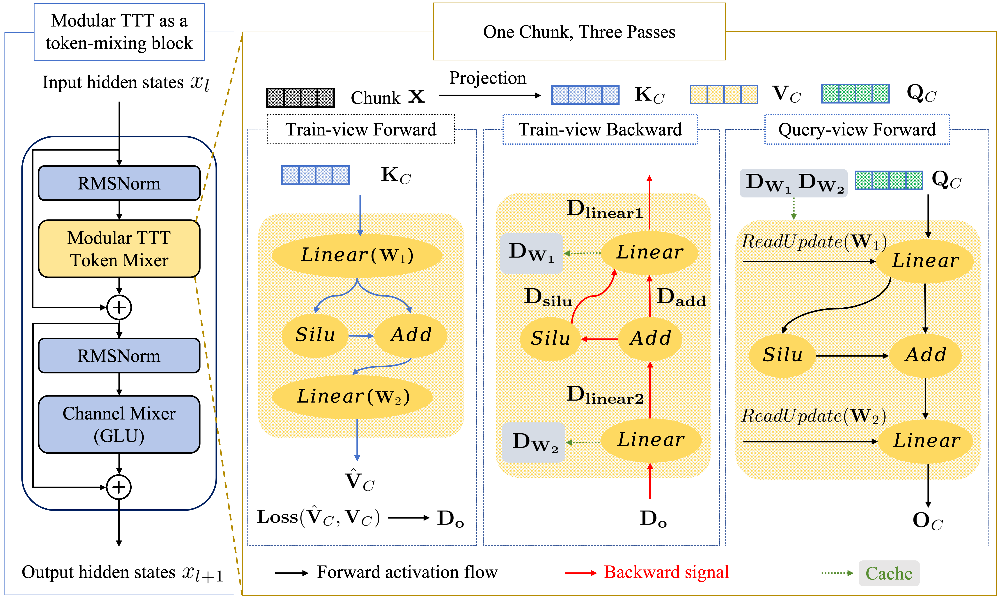
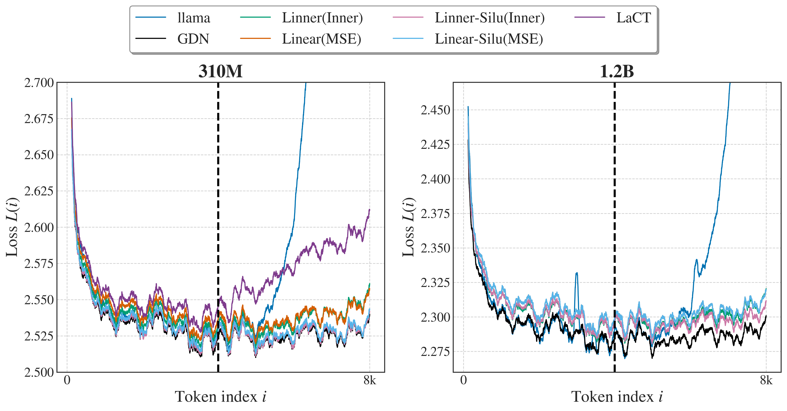

测试时训练（TTT）把序列建模当作在线学习：快速权重在读取序列时被内部学习规则不断更新。它扩展了序列模型的设计空间，但一个突出的瓶颈是：每个TTT变体都要单独硬编码，改一个组件往往牵动全局，很难系统性探索设计空间。
Modular TTT给出的解法是把内学习器表示成一张有向无环图：快速权重网络、损失函数、学习率、权重衰减、归一化都成为可独立指定的模块化维度。基于这套框架，论文系统性消融了TTT的各个组件，找出真正带来增益的设计，并把最优变体训练到410M和1.45B规模。
序列建模是众多领域的基础问题，衍生出注意力、RNN、结构化状态空间模型和线性注意力等一大批架构。测试时训练（TTT）提供了不同视角：把序列建模当作在线学习过程，快速权重在模型处理序列时由内学习规则更新。与把状态更新限制为固定循环或显式缓存的方法不同，TTT把状态更新看作内学习，扩展了序列模型的设计空间。
尽管TTT变体不断增加，其设计空间仍缺乏深入理解。现有方法通常分别硬编码每种变体，带来两个实际困难：一是难以系统开发新TTT方法，修改一个变体往往同时改变多个组件；二是掩盖了各组件各自的作用。实践中快速权重网络、损失函数、学习率、权重衰减和归一化常常一起改变，很难判断究竟是哪个设计选择导致了观察到的行为。
Modular TTT的核心思路是把内学习器表示为有向无环图（DAG），把TTT分解为显式、可控的设计维度。快速权重网络、损失函数、学习率、权重衰减和归一化都被视为可独立指定和变化的模块化组件，图1概述了这一模块化公式、加速效果与消融结果。

以往的TTT方法通常硬编码前向和后向计算。Modular TTT观察到这一过程可以自动化：对训练视图前向、训练视图反向、因果查询视图三类规则做自动组合，就能得到一个完整的图级TTT计算，无需为每个变体手工推导新的全局更新规则（见算法1）。
三遍计算结构把一个TTT模块拆成三个视角：训练视图前向定义了模块执行的计算；训练视图反向提供查询视图前向所需的激活；查询视图前向执行TTT模块的实际前向计算。通过为单层定义训练视图和查询视图操作，可推导出多层网络的对应操作。
更具体地，将TTT模块表示为有向无环图G=(V,E)，图中每个节点对应一个原语操作（线性映射、逐元素非线性、残差加法或归一化），每条边表示张量依赖。内学习器被分解为一组局部操作，每个操作都有明确的训练视图和查询视图语义，图2展示了这一图结构化的记忆与共享的三遍计算流程。
这种模块化表述有两个直接好处。首先，它显著降低了构建新TTT变体的成本：不需要为每个新架构手动推导自定义前向反向规则，只需重组或替换图中的局部原语。其次，它支持系统性消融：不同设计因素对应不同节点，可以在受控方式下改变并直接分析各自的影响。

论文在PyTorch中实现Modular TTT，在Flame框架内做语言建模实验，用lm-eval-harness评估零样本下游性能。实验分两个阶段：第一阶段在主干网络、数据、训练预算一致条件下系统性消融主要组件；第二阶段把入围变体在相同预训练语料上训练100B tokens，与LLaMA、GDN、LaCT等基线对比。
对损失函数的选择，表2呈现清晰的两级分化：在当前TTT设置下，MSE和内积是仅有的两种有竞争力选择，而L1和RMSE始终表现不佳。原因在于损失只通过梯度进入快速更新：MSE在残差中保留大小，内积直接把目标值作为写入信号，两者都保持信息充足的更新尺度；L1只保留残差符号，RMSE则归一化残差尺度，削弱了记忆写入。
TTT对学习率初始化高度敏感。论文把小学习率初始化（small-lr init，初始 η≈10⁻³）作为默认策略，它能在MSE和内积两种损失下都降低损失，在MSE下改进更明显。官方TTT实现和LaCT也采用了类似策略。
研究三种衰减变体：无衰减、标量衰减和向量衰减。无衰减时过去的贡献对快速权重不断累积，限制了模型遗忘陈旧上下文的能力；标量衰减通过乘法收缩逐步施加全局遗忘因子，几乎以零额外开销恢复大部分质量收益；向量衰减将机制扩展为特征选择性遗忘，损失最低，但代价是吞吐下降约25%、峰值内存增加约3GB。
在线性模块后添加非快速权重激活函数（GELU / SiLU）持续提升性能，而Norm效果不稳定、有时甚至降低性能：因为归一化可能导致更大的激活值。将单个线性层替换为MLP也不能带来额外收益：更深的图学习器并未超越浅层前沿，浅层线性变体仍然最强。此外，残差连接与门控几乎没有任何可衡量的收益。
模块化表述也降低了构建和比较TTT变体的成本。在基础算子级，解析式Linear和Norm算子相比各自autodiff参考实现分别带来1.65× 和2.62× 加速，Norm还把峰值内存从31.3MB降至19.3MB。端到端吞吐上，Modular TTT相比官方TTT实现获得2.2×–3.3× 的训练吞吐提升。
基于消融结论，论文选取MSE加内积两种损失、标量衰减、单一线性学习器（加或不加SiLU）作为入围变体，在410M和1.45B规模训练100B tokens。表9显示这些变体在训练损失和多项选择准确率上与强循环基线仍具竞争力；在410M规模下SiLU变体的多项选择平均准确率优于外部基线，在1.45B下内积线性变体取得了最强的Modular TTT结果。
逐token损失（附录）显示所选浅层变体在4k训练上下文附近及之外保持稳定。RULER长上下文评估表明内积线性变体在410M规模最强：但LLaMA依然明显更强，尤其在8k上下文下，说明精确的长上下文召回仍是当前浅层Modular TTT变体的局限。

参考：https://arxiv.org/html/2608.07110v1